Gate of Guidance

- Columns: A–G
- Rows: 1–6
- Boss: Amphisbaena
| A | B | C | D | E | F | G | |
|---|---|---|---|---|---|---|---|
| 1 |  |  | |||||
| 2 |  |  |  |  | |||
| 3 |  |  |  |  | |||
| 4 |  |  |  |  | |||
| 5 |  |  |  |  | |||
| 6 |  |  |
C1: Pillars Gate

- Skeleton
These ruins are littered with traps.
I lack the energy to escape… - Tablet
This is where the Mother lays to rest.
In this path of trials, only heroes who do not fear death are,
permitted to proceed.
D1: Pillars Gate
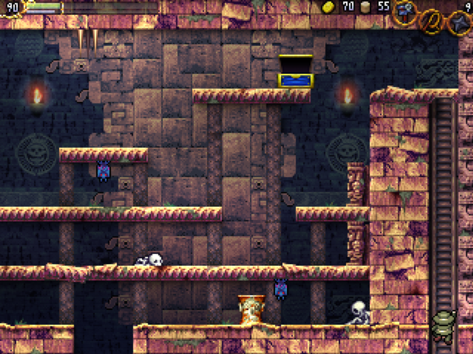
- Treasure: ?
D2: Heavenly Temple of the Cross
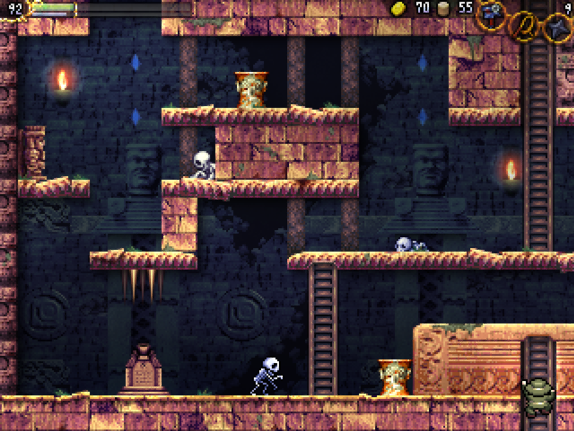
- Save
Behold the <span class=blue>Gate of Guidance</span>.
Death awaits those who would disturb this land.
E2: Heavenly Temple of the Cross
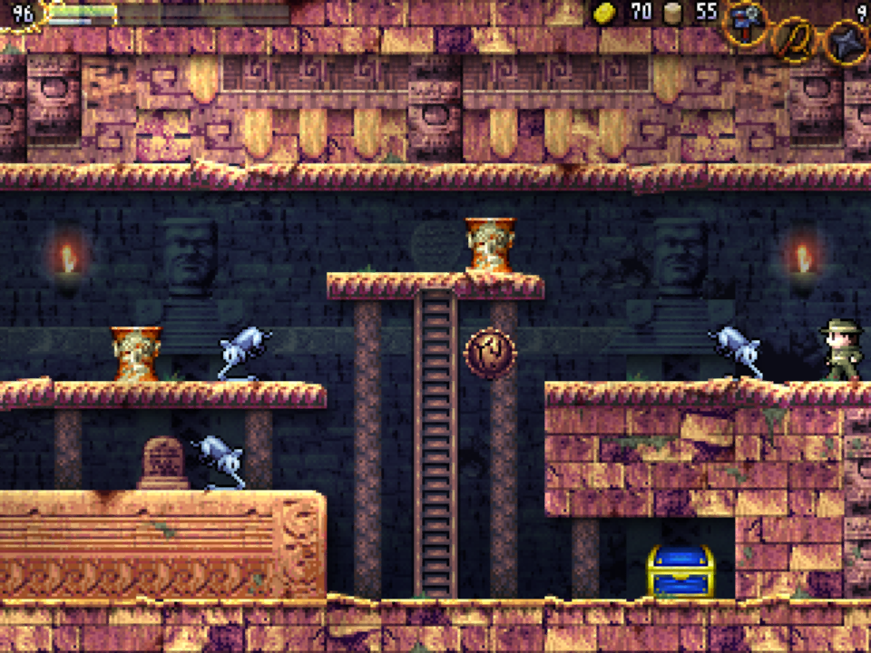
- Seal
- Treasure: ??
- Tablet
Offer 3 lights to the heavens.
F2: Room of Courage
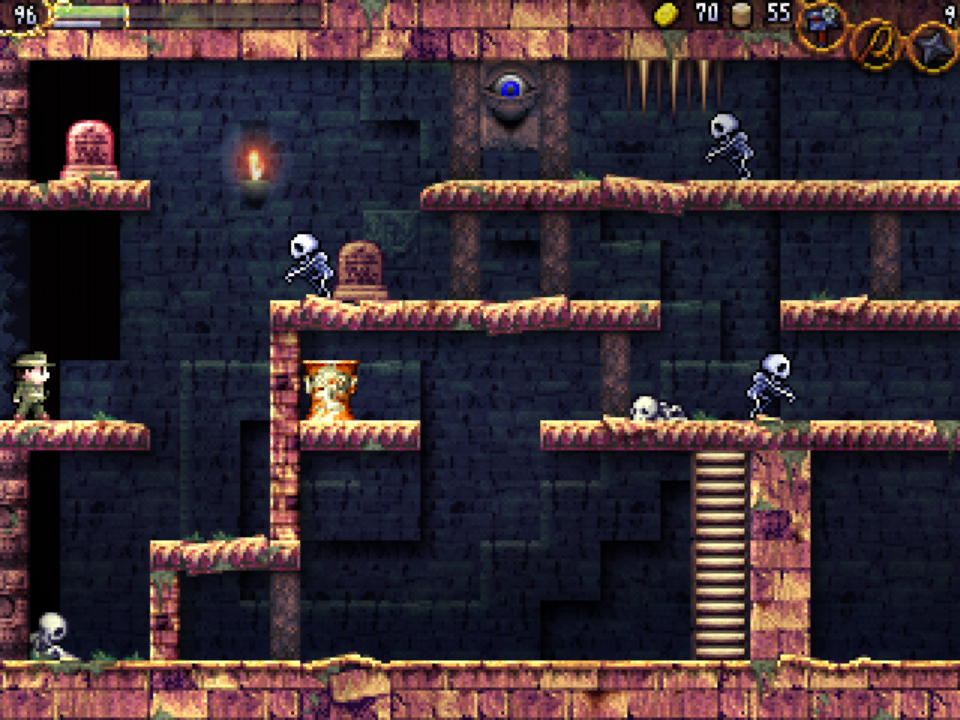
- Skeleton
Room names are written within the puzzles on the stone tablets.
But how should I know the name of each room in the ruins?
I wish I had a <span class=blue>map</span> or something. - Skeleton
I guess that those who have courage can obtain weapons, but…
If I jump into those spikes I’ll die. - Tablet
Thou traipses on holy ground.
Take care not to cause any needless damage.
Those who do not heed this warning will be dealt punishment
from the Heavens. - Tablet
Courageous one, embrace the power.
If thou seeketh power, prove thine courage.
G2: Room of Courage
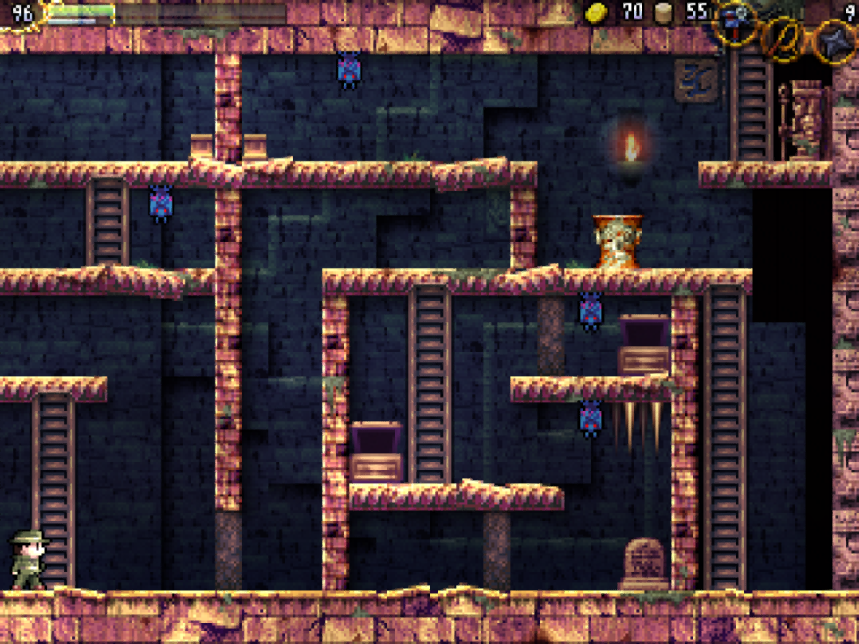
- Entrance: Spring in the Sky A6
A3: Door to Eden
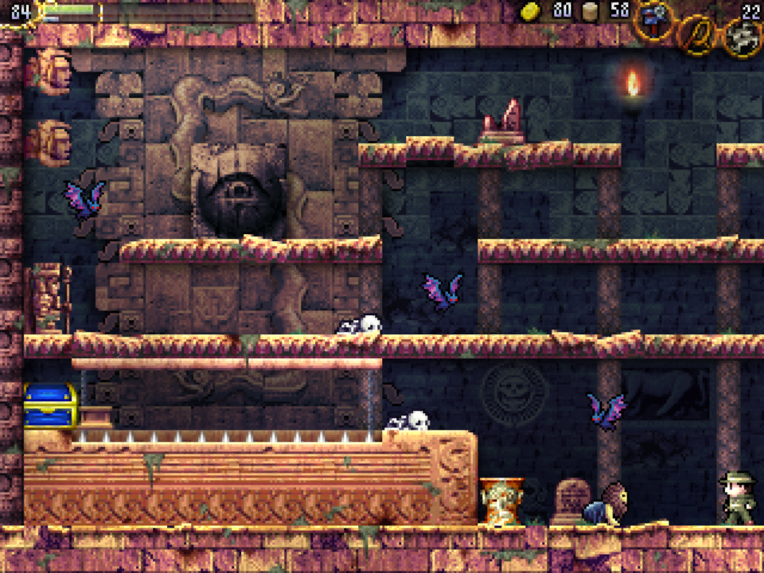
- Feature: The Sealed Wall
- Tablet
<span class=red>Chi You</span>, the demon who attained the power of eternity by
absorbing the life force of innocent maidens.
Woe unto those that fall into the <span class=blue>Sacrificial Abyss</span>.
B3: Pit of the Holy Grail
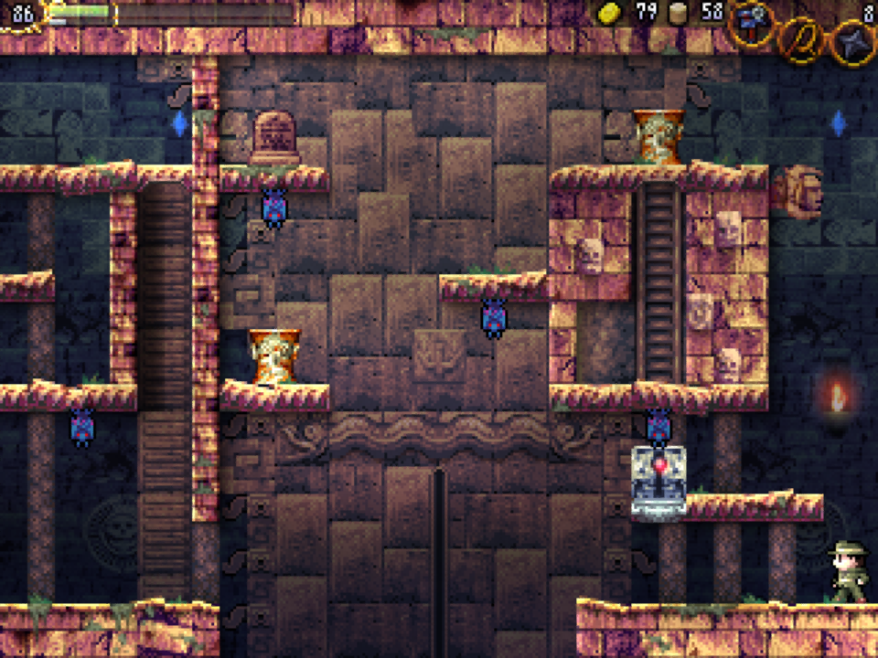
- Tablet
There are 8 <span class=blue>Ankhs</span>.
8 Anhks that protect the great spirits.
Seek the red light; the <span class=green>Ankh Jewel</span>.
The <span class=blue>guardians</span> that slumber within the Ankh will test
thine strength.
- Skeleton
What is with this…
No matter how many times I try, the treasure box won’t open.
C3: Heavenly Corridor
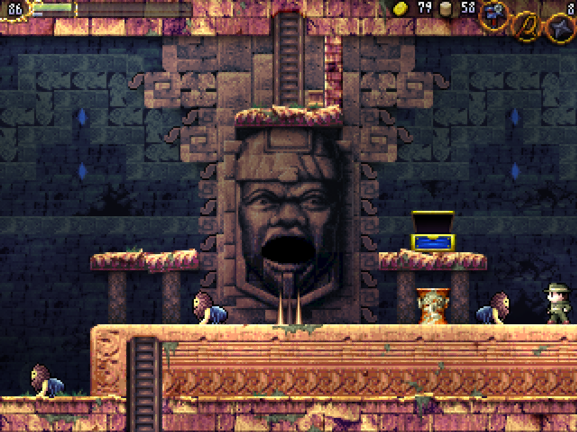
- Treasure: ?
D3: Heavenly Corridor
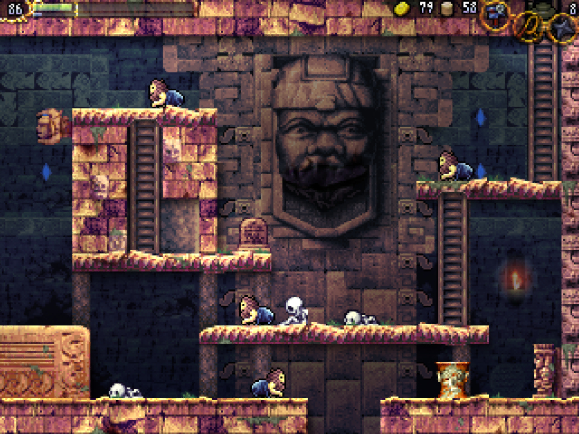
- Skeleton
…can’t believe I fell for… such an obvious trap…
- Tablet
Those who challenge the Guardian.
Know thy strength.
Death awaits the powerless.
The future awaits those who train themselves and take
on the challenge.
B4: Pit of the Holy Grail

- Treasure: Holy Grail
- NPC: Conversation
Eight spirits dwell within this land.
The spirits are the <span class=blue>guardians</span>, protectors of these
grounds.
The spirits slumbers within <span class=blue>Ankhs</span> that will
shatter under the bright red light.
The spirits will awaken at that time.The Ankh of these lands lies far beyond the path
of the gazing faces, and the jewel is at the
foot of the <span class=blue>Cliff of Radiance</span>. - Skeleton
It seems there are shops in these ruins,
Oh well. I’m about to die, so it doesn’t matter to me.
C4: Gate of Giant Faces
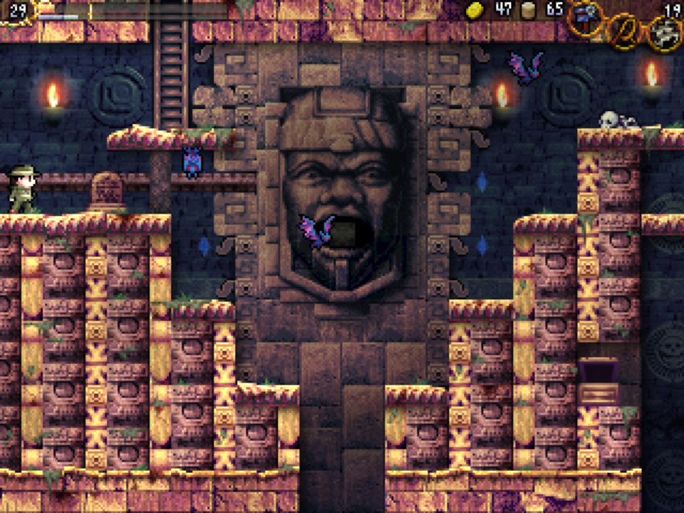
- Tablet
It shall connect once held in the mouth.
When on swallows, the other spits out.
D4: Room of the Strong
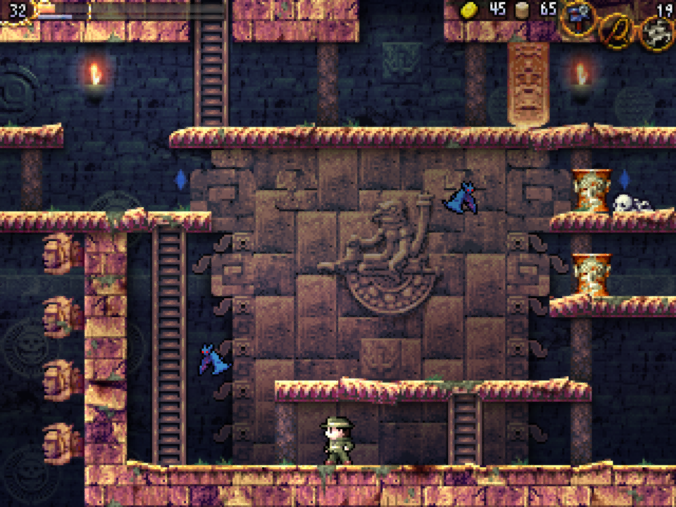
- Feature: An Ancient Mayan Airship?
E4: Snake’s Sanctuary

- Feature: The Mechanical God
- Tablet
Pour thy memories into the <span class=green>Holy Grail</span>.
Leave thy mark on this land.
Then raise the <span class=green>Holy Grail</span> up and recall lands
once traveled.
In doing so, thou will once again stand upon that land. - Skeleton
I found an escape route!
These ruins seem to be connected in a very mysterious fashion…
B5: Pit of the Holy Grail
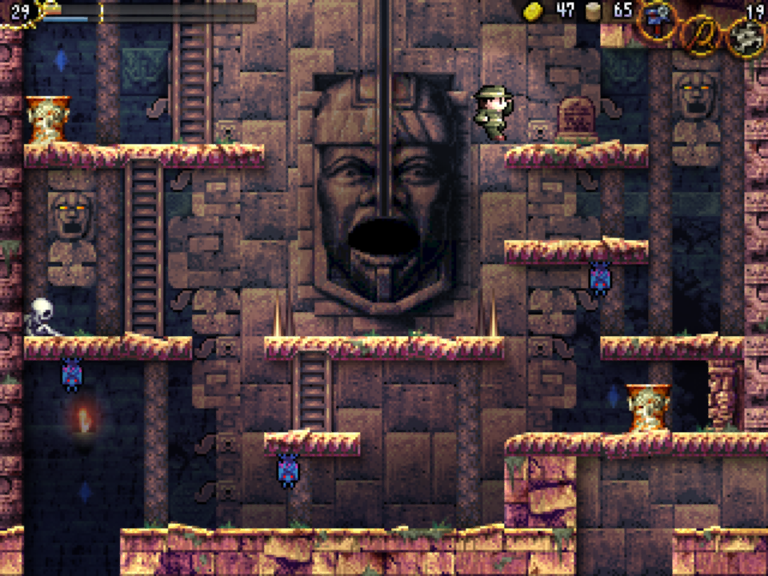
- Tablet
To those who push the white box:
The white platform and white box are drawn to each other.
C5: Monument of Oannes
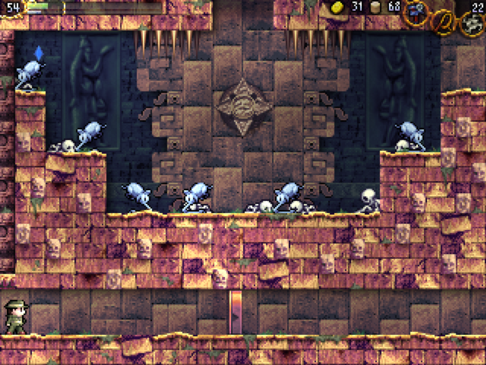
- Feature: Cross of Light
- Feature: Oannes
- Skeleton
How many times have I fallen here?
Shoulda figured it’s a trap. - Skeleton
Whoa, that red one is way too strong!
I gotta watch out for that bone attack!
..Oh …wait, I’m already all bone. Right.
D5: Cliff of Radiance
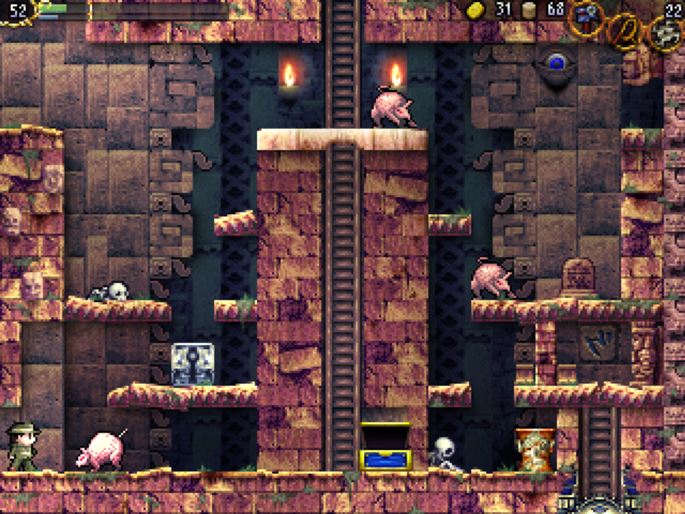
- Entrance: Temple of the Sun ??
- Treasure: Jewel
- Tablet
A <span class=blue>Watchtower</span> soars above the <span class=blue>Temple of the Sun</span>.
Traps to capture theves have been newly set.
In a newly constructed wall, too, the key has been hidden.
E5: Snake’s Sanctuary
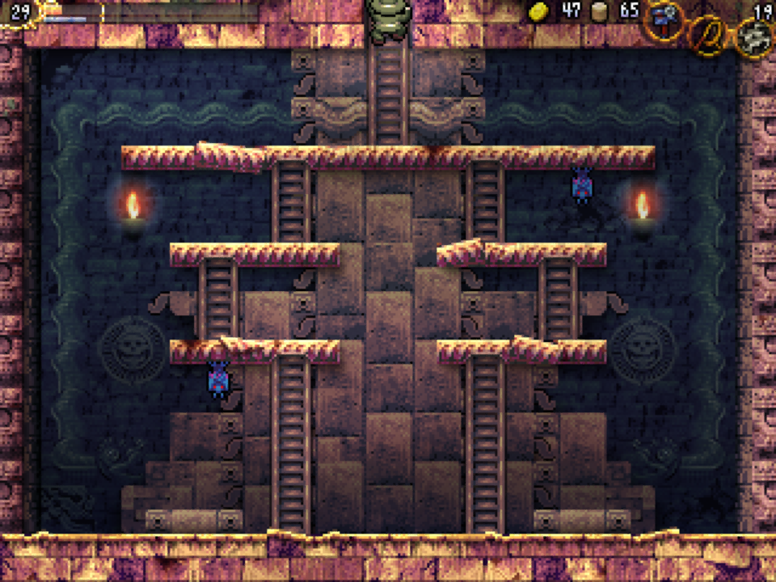
- Ankh: Amphisbaena
A6: Monument of Time

- Entrance: Mausoleum of the Giants B1
- Tablet
The Guild runs a hid__n s____.
Put ____er aside in favor of m__ey and barter. - Tablet
The sad tale of the Giants.
The tragic history of the Giants is written here. - Skeleton
I figured out where the <span class=blue>Cliff of Radiance</span> is!
But there’s some sort of door blocking my way…
Pulling doesn’t open it…Actually,
there isn’t even a knob to pull.I wonder if I was supposed to push…
guess I’ll never know.
B6: Monument of Time

- NPC: Shop
- Sells: Shuriken Ammo, guild.exe, Weights
- Skeleton
“The first age of the sun was destroyed by flood,
The second age of the sun was destroyed by the god of wind,
The third age of the sun was destroyed by the god of fire,
The fourth age of the sun was destroyed by blood and fire
falling from the sky.”
The same thing was written in Mayan prophecy.
Could there be a connection?
Mausoleum of the Giants

- Columns: A–H
- Rows: 1–6
- Boss: Sakit
| A | B | C | D | E | F | G | H | </tr>||||||||||||||||||||||||||||||||||||||||||||||||||||||||||
|---|---|---|---|---|---|---|---|---|---|---|---|---|---|---|---|---|---|---|---|---|---|---|---|---|---|---|---|---|---|---|---|---|---|---|---|---|---|---|---|---|---|---|---|---|---|---|---|---|---|---|---|---|---|---|---|---|---|---|---|---|---|---|---|---|---|
| 1 |  |  |  | ||||||||||||||||||||||||||||||||||||||||||||||||||||||||||||||
| 2 |  |  |  |  | |||||||||||||||||||||||||||||||||||||||||||||||||||||||||||||
| 3 |  |  |  |  | |||||||||||||||||||||||||||||||||||||||||||||||||||||||||||||
| 4 |  |  |  |  | |||||||||||||||||||||||||||||||||||||||||||||||||||||||||||||
| 5 |  |  |  |  | |||||||||||||||||||||||||||||||||||||||||||||||||||||||||||||
| 6 |  |
| A | B | C | D | E | |||||||||||||||||||||||||||||||||||||||||||||||||||||||||||||
|---|---|---|---|---|---|---|---|---|---|---|---|---|---|---|---|---|---|---|---|---|---|---|---|---|---|---|---|---|---|---|---|---|---|---|---|---|---|---|---|---|---|---|---|---|---|---|---|---|---|---|---|---|---|---|---|---|---|---|---|---|---|---|---|---|---|
| 1 |  | </td> | |||||||||||||||||||||||||||||||||||||||||||||||||||||||||||||||
| 2 |  |  |  | </td>||||||||||||||||||||||||||||||||||||||||||||||||||||||||||||||
| 3 |  |  | </td>|||||||||||||||||||||||||||||||||||||||||||||||||||||||||||||||
| 4 |  |  | </td> | ||||||||||||||||||||||||||||||||||||||||||||||||||||||||||||||
| 5 |  |  |  | </td> | |||||||||||||||||||||||||||||||||||||||||||||||||||||||||||||
| 6 |  |  |  | </td> | |||||||||||||||||||||||||||||||||||||||||||||||||||||||||||||
| 7 |  | </td> | |||||||||||||||||||||||||||||||||||||||||||||||||||||||||||||||
| 8 |  |  | </td> | ||||||||||||||||||||||||||||||||||||||||||||||||||||||||||||||
| 9 |  |  | </td> | ||||||||||||||||||||||||||||||||||||||||||||||||||||||||||||||
| 10 |  | </td> </table> ## A4: ??  - Skeleton > This is the aquaduct that Migela made... > But it looks like it's not working anymore. ## A5: ??  - Feature: The Philosopher's Sigil > [La-Mulana Ruins Dictionary: The Philosopher's Sigil] > A sigil belonging to the legendary Four Philosophers said to be > living in the ruins. > Signifies the Philosopher of Wisdom. ## C5: Sacred Lake  - Tablet > Heal thine tired body. > The <span class=blue>fairy</span> will gently heal thou. > The <span class=blue>fairy</span> will help thy fight. > The <span class=blue>fairy</span> will provide treasure > The <span class=blue>fairy</span> will reveal secrets. > >  ## D5: Waterfall Approach  ## A6: ??  - Tablet > Open the floodgate. > The water will once again flow. > Open the floodgate of <span class=blue>Oannes</span>. > >  ## B6: ??  - Skeleton > I'll be washed away by that waterfall. > If only I had a <span class=blue>Helmet</span>, I could probably get by... ## C6: Goddess' Water Jug  - Feature: Cross of Light - Tablet > The priest, <span class=blue>Oannes</span>, takes the form of a fish. This land > flourishes under him; as only he may close the floodgate. ## B7: Mirror waterfall  - Tablet > Sail away. > There, thou will find where Bahamut slumbers. > The fish master holds the red light. --- # Temple of the Sun  - Columns: A–G - Rows: 1–6 - Boss: ? |
| A | B | C | D | E | F | G | |
|---|---|---|---|---|---|---|---|
| 1 |  |  | |||||
| 2 |  |  |  |  | |||
| 3 |  |  |  |  | |||
| 4 |  |  |  |  | |||
| 5 |  |  |  |  | |||
| 6 |  |
|  |  |  |  |